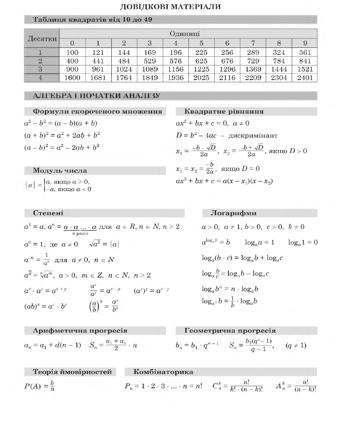
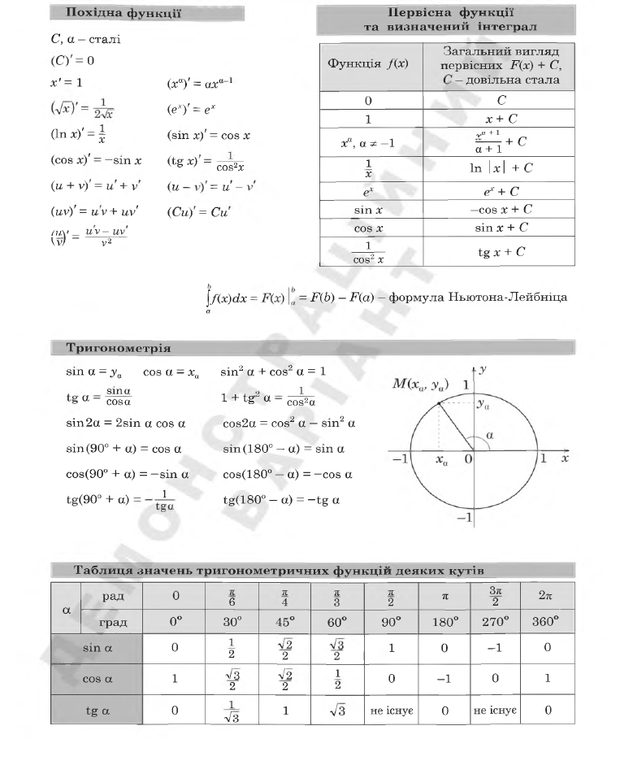
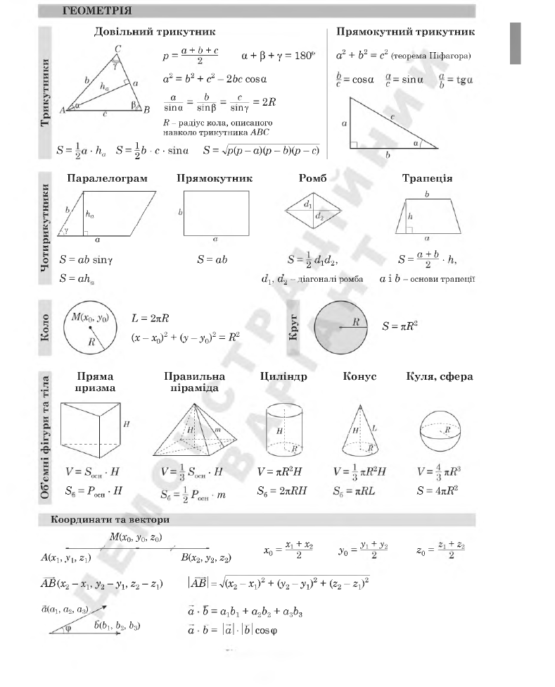

Що буде з результатом?
Збережені відповіді та результат передано організаторам. Якщо надсилання перервалося через інтернет, сайт повторить його автоматично з цього пристрою.
Перевір знання, відчуй темп тестування та спокійніше зайди в реальний іспит. Чотири предмети, два етапи та формат, наближений до НМТ.
Є питання або щось не працює?
Напиши нам у Telegram — допоможемо.
3 жовтня 2026 року. Перша сесія починається о 10:00, друга — о 12:20 за київським часом. Дані для входу отримаєш після підтвердження реєстрації.
Українська мова, математика, історія України та англійська мова. Математичний напрям представляє Kolisnyk Academy, а українську мову, історію та англійську — Lessons for You.
Перша сесія триває з 10:00 до 12:00. О 12:00 вона завершується автоматично, після чого триває перерва до 12:20. Якщо завершиш раніше, матимеш довшу перерву. Друга сесія проходить з 12:20 до 14:20.
О 12:00 перша сесія завершується автоматично. Якщо учасник не завершив її самостійно вчасно, за цю сесію відображатиметься 0. Дані виконання зберігаються для організатора.
Так. Сайт адаптований для смартфона. Але для самого тесту, якщо є можливість, зручніше використовувати ноутбук або комп'ютер.
Команда отримає твою заявку. Важливу організаційну інформацію та доступ надішлемо за вказаними контактами.
Напиши нам у Telegram підтримки та вкажи ім'я, з яким реєструвався / реєструвалася.
Пробний НМТ завершився о 14:20. Дякуємо, що перевірили свої знання разом із Kolisnyk Academy × Lessons for You.
Збережені відповіді та результат передано організаторам. Якщо надсилання перервалося через інтернет, сайт повторить його автоматично з цього пристрою.
Не покладайтеся на збережене посилання: для наступного тестування можуть бути інша сторінка й нові персональні дані для входу. Стежте за повідомленнями або напишіть нам.
Якщо результат не надіслався, виникла технічна помилка чи залишилося організаційне питання — зверніться до підтримки.
Написати в Telegram →Заявки приймаємо до 2 жовтня 2026, 23:59 за київським часом.
Якщо форма не надсилається, не приходить підтвердження або ти помилився / помилилася в контактах — напиши нам.
Найшвидший спосіб зв'язку — Telegram.
Написати в TelegramВхід для учасників буде доступний з 09:00 3 жовтня. Увійди завчасно — тест починається о 10:00.
Не можеш увійти?
Напиши нам — допоможемо перевірити доступ.
Тут можна перевірити обидві сесії без очікування за реальним розкладом і повторити весь шлях ще раз.
Офіційний довідник формул на 3 сторінки: алгебра, аналіз, тригонометрія, геометрія, координати та вектори.



Обери команду за потрібними предметами. Це два окремі освітні напрями.
Kolisnyk Academy проводить підготовку тільки з математики.
Lessons for You проводить підготовку з української мови, історії України та англійської.
Не знаєш, кого обрати? Напиши нам у Telegram — підкажемо.
Поставити питанняЦя сторінка не показується у звичайній навігації. У бойовій версії пароль перевіряється тільки на стороні Google Apps Script і не зберігається в HTML.
Повернутися до української мови та математики вже неможливо. Друга сесія почнеться у запланований час — о 12:20. Якщо першу сесію завершено раніше, перерва автоматично буде довшою.
Результат обчислено лише за відповідями, які були підтверджені кнопкою «Зберегти відповідь».